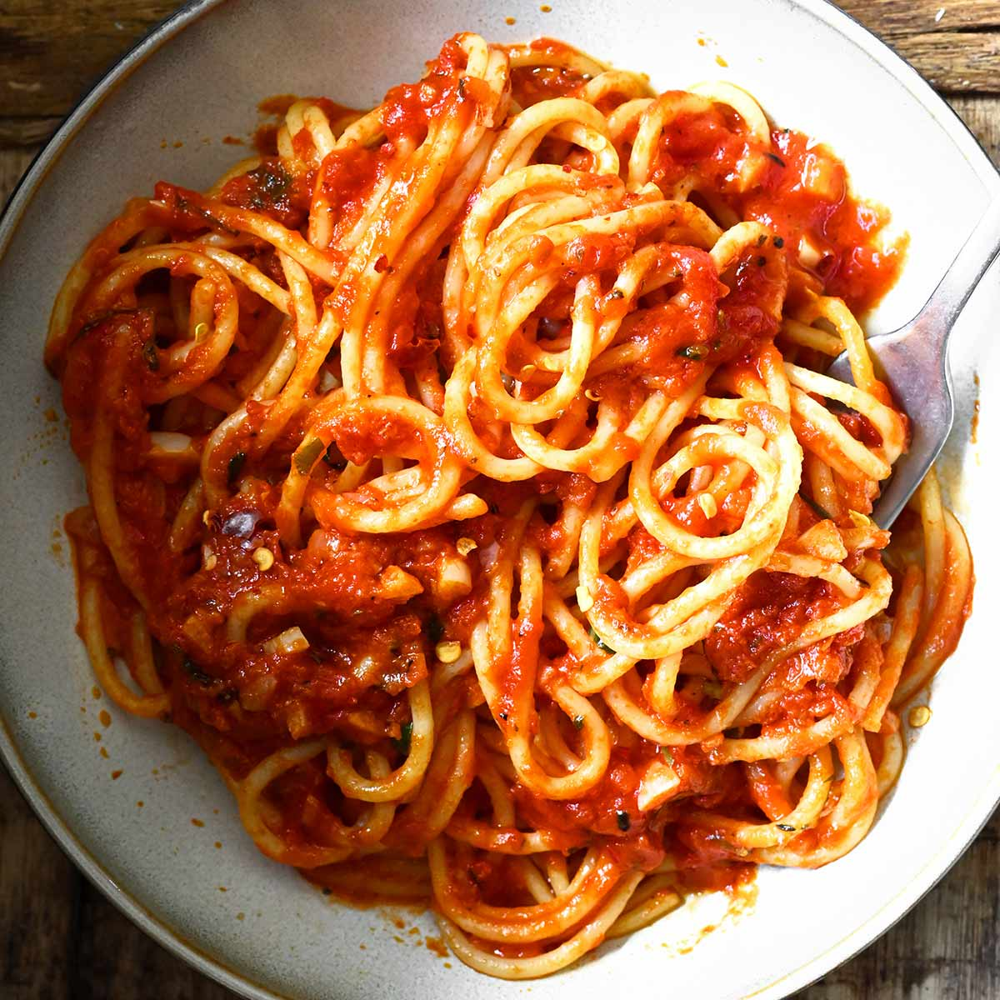

Home
Spaghetti

Classic Spaghetti
A classic, easy weeknight spaghetti with meat sauce takes about 35 minutes to prepare.
Ingredients
- Spaghetti: 1 pound dried spaghetti
- Meat: 1 pound ground beef (or a mix of beef and pork)
- Aromatics & Vegetables: 1 chopped onion, 3 minced garlic cloves
Steps
Brown the meat: Heat olive oil in a large pot or Dutch oven over medium-high heat. Add the ground beef and cook for about 8 minutes until browned. Break it into small crumbles.
Sauté aromatics: Add the chopped onion and cook for 5 minutes until soft. Stir in the garlic, tomato paste, oregano, and red pepper flakes, cooking for 1 minute.
Build the sauce: Pour in the water or broth and scrape the bottom of the pot. Stir in the crushed tomatoes, salt, and black pepper. Bring to a low simmer and cook uncovered for 25 minutes.